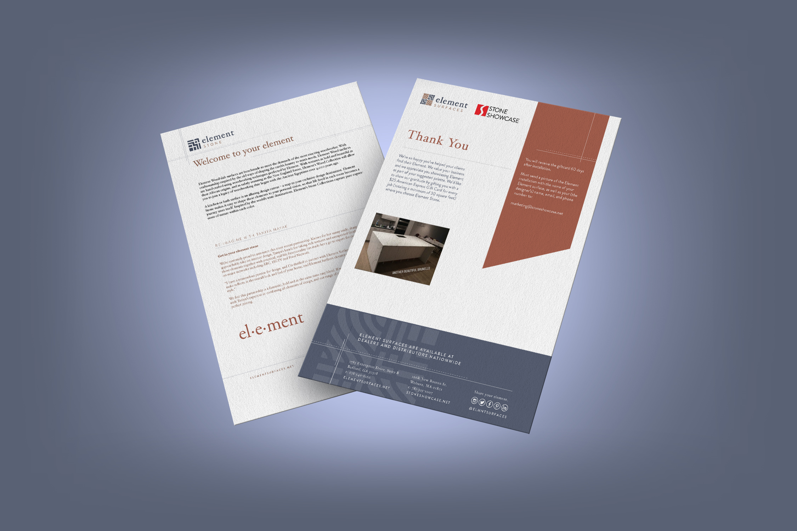
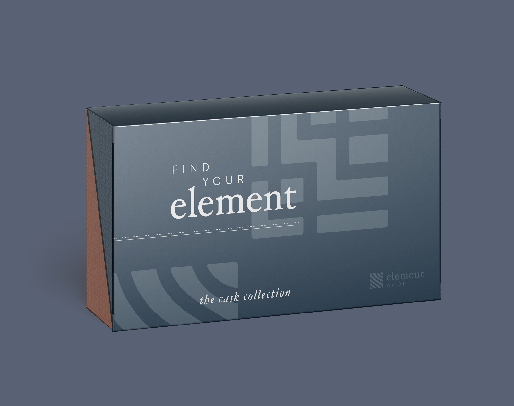
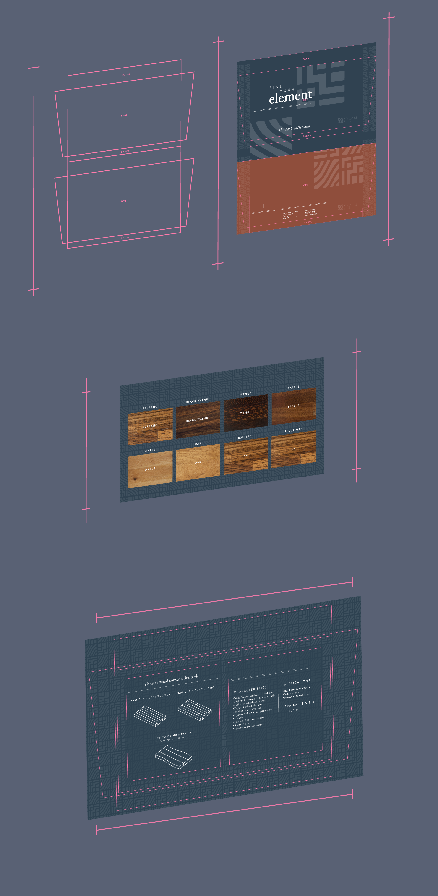
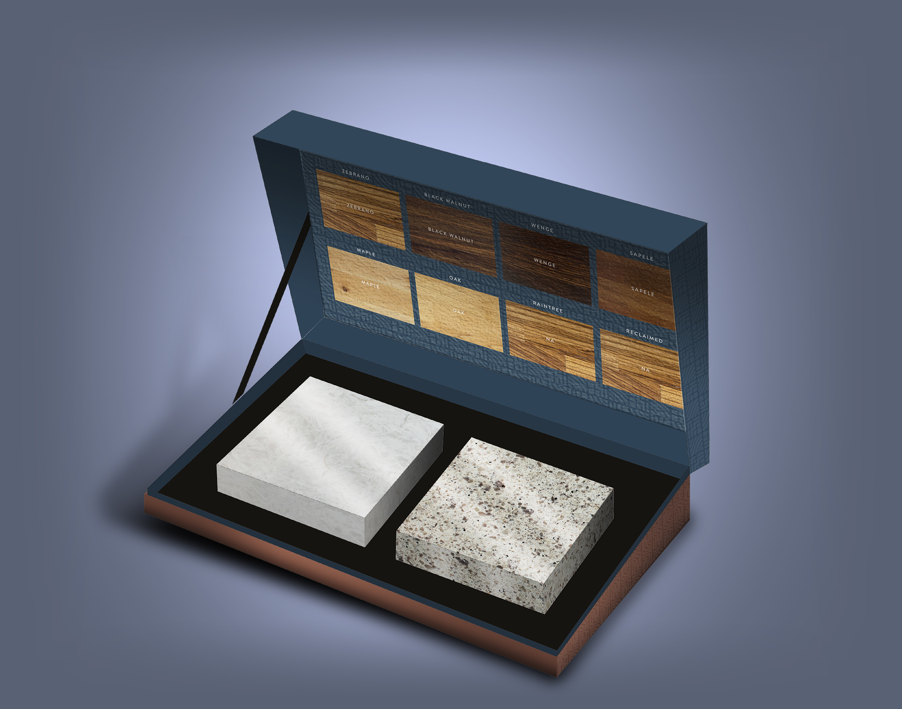
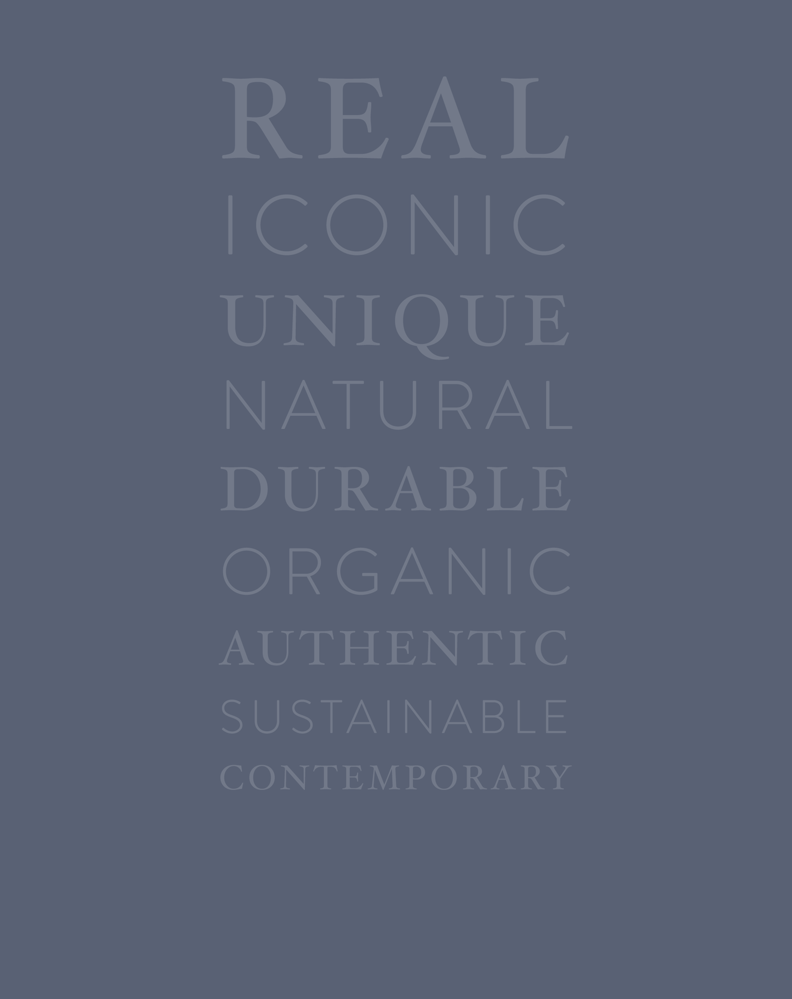

More than a graphic designer
on day one.
Two years building the visual and digital presence of a stone distributor — brand system, packaging, web development, trade show design, and the beginning of an operational tool that never made it to launch.

Visual identity, typography, color palette, and brand guidelines
Sample box system — dieline, print spec, and production
Full website designed and built in WordPress
Booth design across multiple configurations and angles
A distributor with
no visual presence.
Element Surfaces sources natural and manufactured stone directly from quarries and distributes it to manufacturers for residential and commercial projects. The product was strong. The brand wasn't — and neither was the web presence or the physical marketing materials that buyers rely on to make purchasing decisions.
A company dealing in premium natural stone — material with real craft and provenance — had marketing that didn't reflect its product. The website was weak, the brand was inconsistent, and there was no unified system connecting their physical and digital presence.
Stone buyers evaluate vendors visually before they ever touch a sample. The brand had to earn that first impression.
Over two years, I built the visual and digital foundation: a brand system, a WordPress website, product packaging, printed marketing materials, and a trade show booth design used to reach buyers at industry events.
What started as a design role expanded into product thinking — including preliminary work on an internal warehouse system designed around how floor staff actually operated.
The sample box —
the product before the product.
In stone distribution, the sample kit is often the first physical thing a buyer holds. It's a sales tool as much as a product. The Cask Collection sample box needed to feel as premium as the stone inside it.
I designed the box from the dieline outward — speccing the structural form, creating the print design across all faces, and coordinating production. The exterior uses the brand's deep navy and terracotta palette with a textured pattern system derived from the brand mark. The inside cover holds a labeled sample grid identifying each stone option in the collection.



"In premium materials, the packaging is part of the product. It tells the buyer something about the company before they open the box."
On the role of physical brand touchpointsDesigned and built
in WordPress.
The website needed to do what a showroom does — let buyers explore stone visually, by category and finish, without friction. I designed and built the full site in WordPress, creating a visual browsing experience that put the material first.
The site carried the brand system into a digital context: the typography, color palette, and spatial approach established in print applied consistently across every page. Photography was chosen and art-directed to show stone in context — in kitchens, on countertops — rather than as flat product shots.
Website screenshots
Website screenshot images can be placed here — replace this block with your ss-website.png image once ready.
The website, packaging, brochures, and trade show materials all draw from the same visual system — built from scratch and applied consistently across print and digital. That kind of coherence doesn't happen by accident. It requires someone thinking in systems, not just executing individual pieces.
Designing for
a room full of competition.
Trade shows in the stone industry are dense — every distributor has a booth, most look the same. The Element Surfaces booth needed to be recognizable from across the floor and consistent with everything else we'd built.
I designed the booth across multiple configurations, working through different angles to ensure the brand read clearly from each approach. The navy and terracotta palette that anchored the packaging carried directly into the booth — creating visual continuity between the physical collateral buyers might already have seen and the space they were walking into.

Trade show booth — three-angle review used to evaluate the design before production.
Designing for the full environment
A booth isn't a poster. Buyers approach from different angles, at different distances. Reviewing the design from three directions wasn't just thorough — it was the only way to know whether the brand held up in the space it would actually inhabit.
A system designed
for the people using it.
Toward the end of my time at Element Surfaces, I began working on something different — an internal warehouse management system to help staff track inventory and route movement through the warehouse more efficiently.
Rather than building from assumptions, I spent time on the floor with the people who would actually use it — talking through their workflows, mapping where friction happened, and understanding how they thought about moving material through the space. The goal was a system that matched how they already worked, not one that required them to adapt to software logic.
Stakeholder interviews with floor staff
The most valuable part of this process was talking to the people closest to the work. Warehouse staff had developed their own informal routing logic over time — patterns that made sense physically but weren't captured anywhere. The design work was translating that institutional knowledge into a structured system.
This project didn't ship
I left the company before the system was complete. The discovery and early design work was done, but it didn't reach production. I'm including it here because the process — not just the output — is the work worth showing. Understanding how to research an operational problem, talk to the people experiencing it, and translate that into a design direction is a skill that carries across every kind of project.
"The best operational tools disappear into the workflow. The design problem is understanding the workflow well enough to know where the tool fits."
On designing for operational contextsWhat this role
actually taught me.
Early career work at a company like this — where the scope kept expanding beyond the job title — is where a lot of the foundational thinking gets built. Looking back, a few things stand out.
Brand systems compound
The decisions made early — the palette, the typeface, the pattern system — showed up everywhere for two years. Getting them right at the start made every subsequent deliverable faster and more consistent. Getting them wrong would have made every subsequent deliverable a renegotiation.
Physical and digital require different thinking
A dieline and a webpage solve fundamentally different problems. The brand had to hold up in print, on screen, in a large-format trade show environment, and inside a physical box — all at the same time. That kind of range requires actively switching how you're thinking about the work, not just resizing assets.
The best discoveries happen before you design anything
The warehouse project reinforced something I've carried into every project since: the most valuable time is often spent before the design work starts. Talking to people, mapping their actual process, understanding the real constraint. The design almost writes itself after that.
I can build and maintain a coherent visual system across multiple mediums — print, packaging, digital, environmental — while expanding into adjacent problems when the opportunity presents itself. That combination of craft and curiosity is what defined this role, and what I've carried forward into everything since.
